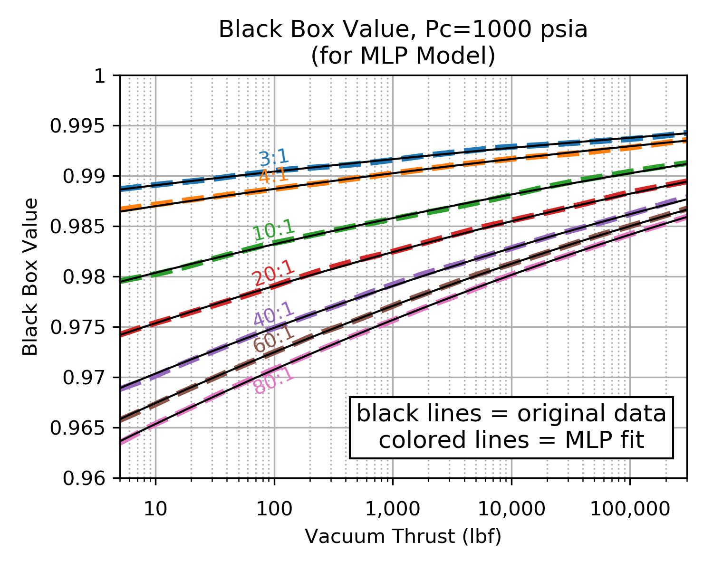

Multilayer Perceptron¶
Multi-layer Perceptron (MLP) is a supervised learning algorithm that learns a function by training on a dataset. It can have multiple input variables and create multiple output values.
Given a set of features and a target , it can learn a non-linear function approximator.
See the discussion on Wikipedia and the sklearn implementation at Multi-layer Perceptron regressor.
Monte Carlo Method¶
Many of the calculated parameters required by RocketIsp are best calculated by large complex numerical models. Since including those models in RocketIsp is not feasible, correlations of those models’ output is used.
RocketIsp uses Multi-layer Perceptron regressors to correlate data generated by complex numerical models. Each model is treated as a Black Box and a large random sampling of inputs to the model are used to generate a large sampling of results. The results are then correlated with a Multi-layer Perceptron regressor.
Such a data-generation approach is known as a Monte Carlo method.
Example¶
In order to demonstrate the method, the large complex numerical model Black Box will be replaced by a very simple model, Monte Carlo data will be generated from that simple model and that data will be fitted with a Multi-layer Perceptron regressor.
For this example the Black Box will be just a single equation taken from the Expanded Liquid Engine Simulation (ELES) computer program. ELES was created in 1984 by Aerojet Techsystems Company (now Aerojet Rocketdyne) to model the size, weight and performance of liquid propellant stages. An AIAA paper describes ELES in overview.
On page 13 of the ELES Technical Information Manual is a rough approximation equation for boundary layer efficiency, \(\large{\eta_{bl}}\). This example will use that equation to simulate a large complex model.

The above \(\large{\eta_{bl}}\) equation can be implemented in python code as the following function.
def eles_effbl( Pc=100.0, Fvac=1000.0, eps=20.0):
"""
Return effBL from ELES boundary layer correlation.
where: Pc=psia, Fvac=lbf, eps=dimensionless
"""
logPF = log(0.01*Pc*Fvac)
effBL = 0.997 - (log(eps) * 0.01 * (1-0.065*logPF + 0.001*logPF**2))
return effBL
Create Dataset¶
One of the considerations when generating data for a Monte Carlo analysis is the selection of distribution type for each input parameter. In general a continuous uniform distribution is good for this application, however, when an input can cover orders of magnitude , it is sometimes better to use a uniform distribution of the logarithm of that input. For this example, distributions of the logarithm of chamber pressure, vacuum thrust and area ratio were used,
A small python code (expand section below) was used to make a pandas dataframe of Monte Carlo data and save it to a CSV file. This is the data that will be fitted with a Multi-layer Perceptron regressor.
Click HERE to view python code
import os, sys
import pandas as pd
from numpy import log10, log
import random
random.seed(7) # for this example make reproducible results
def eles_effbl( Pc=100.0, Fvac=1000.0, eps=20.0):
"""
Return effBL from ELES boundary layer correlation.
where: Pc=psia, Fvac=lbf, eps=dimensionless
"""
logPF = log(0.01*Pc*Fvac)
effBL = 0.997 - (log(eps) * 0.01 * (1-0.065*logPF + 0.001*logPF**2))
return effBL
def linear_rand( vmin=0, vmax=10 ):
"""Return value from uniform distribution within vmin to vmax"""
return vmin + (vmax - vmin) * random.random()
def log_rand( vmin=-2, vmax=2 ):
"""Return log10(value) where value is from uniform distribution within log10(vmin) to log10(vmax)"""
val = linear_rand( log10(vmin), log10(vmax) )
return val
def create_pandas_monte_carlo( size=10000 ):
"""Create a pandas dataframe of Monte Carlo data"""
rowsL = []
for i in range( size ):
# create random input values (Pc, Fvac and eps use log values)
log10Pc = log_rand( 100.0, 3000.0 )
log10Fvac = log_rand( 5.0, 300000.0 )
log10eps = log_rand( 2.0, 200.0 )
# timeOfDay is included as an uncorrelated input.
tod = linear_rand( 0.0, 24.0 )
# calculate model results and add data row to pandas dataframe
effBL = eles_effbl( Pc=10.0**log10Pc, Fvac=10.0**log10Fvac, eps=10.0**log10eps)
rowsL.append( [effBL, log10Pc, log10Fvac, log10eps, tod] )
df = pd.DataFrame( rowsL, columns=('effBL', 'log10(Pc)', 'log10(Fvac)', 'log10(eps)', 'timeOfDay'))
return df
df = create_pandas_monte_carlo()
print( df.describe() )
df.to_csv( 'mlp_example.csv', index=False )
A display of the pandas dataframe description is shown below. Notice that timeOfDay is included to act as an uncorrelated input.
effBL log10(Pc) log10(Fvac) log10(eps) timeOfDay
count 10000.000000 10000.000000 10000.000000 10000.000000 10000.000000
mean 0.981543 2.740944 3.066303 1.296131 12.077017
std 0.008608 0.422945 1.379687 0.580750 6.920006
min 0.951005 2.000074 0.699824 0.301047 0.003217
25% 0.975976 2.380903 1.857840 0.789792 6.126944
50% 0.982975 2.748261 3.061789 1.297682 12.051867
75% 0.988453 3.103367 4.261623 1.803856 18.014434
max 0.995327 3.477062 5.476351 2.300927 23.999201
Select Independent Inputs¶
While it is possible to simply use all of the complex model’s inputs as inputs to the Multi-layer Perceptron regressor, it is probably better to select only those inputs that make a difference in the output, \(\large{\eta_{bl}}\).
One way to learn, not only which inputs matter, but their order of importance, is the following:
One by one, fit each individual independent parameter to the dataset with a Multi-layer Perceptron regressor. Select the input with the best correlation coefficient as the most important input.
Next combine the most important input with the remaining inputs, one by one, to find the second most important input. Continue the process until all possible inputs are in order of importance.
The chart below shows the results of this process on the example dataset. It indicates that AreaRatio and Thrust are both very important. Pc adds some improvement and timeOfDay adds nothing.
As a result, it seems reasonable to use AreaRatio, Thrust and Pc as inputs to the final Multi-layer Perceptron regressor. (knowing what is in the Black Box we should have expected those 3 inputs, but we may not have known their order of importance)

Fit MLP to Dataset¶
A small python script was used to fit the monte carlo data to a Multi-layer Perceptron regressor
Click HERE to view python code
import os, sys
import pandas
from numpy import log10
from sklearn.neural_network import MLPRegressor
from joblib import dump, load
csv_name = 'mlp_example.csv'
df = pandas.read_csv( csv_name )
# scale all parameters to be approximately between 0 and 1
df['Pc'] = (df['log10(Pc)'] - 2.0) / 1.5
df['Fvac'] = (df['log10(Fvac)'] - 0.6) / 5.0
df['eps'] = (df['log10(eps)'] - 0.3) / 2
df['eff'] = (df['effBL'] - 0.95) / 0.05
indepL = ['Pc', 'Fvac', 'eps']
target_var = 'eff'
X = df[ indepL ]
y = df[ target_var ]
print('fitting',target_var, ' with indepL =',indepL)
# verify that scaling looks good by checking min and max values in pandas dataframes
print( X.describe() )
print('-'*44)
print( y.describe() )
print('-'*44)
regr = MLPRegressor(max_iter=50000, hidden_layer_sizes=(100,100), tol=0.000001)
regr.fit(X, y)
score = regr.score(X,y)
print('correlation coefficient:',score )
dump(regr, 'mlp_example.joblib' )
The script outputs a summary of the scaled inputs and output. Note that all of the inputs and the output are scaled to between 0 and 1. Also note that the correlation coefficient is excellent… it is greater than 0.999 (will vary slightly with each run). The script saves the MLP regressor to a file named “mlp_example.joblib” that can be reloaded in order to make use of the correlation.:
fitting eff with indepL = ['Pc', 'Fvac', 'eps']
Pc Fvac eps
count 10000.000000 10000.000000 10000.000000
mean 0.493963 0.493261 0.498065
std 0.281963 0.275937 0.290375
min 0.000049 0.019965 0.000523
25% 0.253935 0.251568 0.244896
50% 0.498841 0.492358 0.498841
75% 0.735578 0.732325 0.751928
max 0.984708 0.975270 1.000463
--------------------------------------------
count 10000.000000
mean 0.630870
std 0.172157
min 0.020108
25% 0.519511
50% 0.659495
75% 0.769058
max 0.906547
Name: eff, dtype: float64
--------------------------------------------
correlation coefficient: 0.9998603014551914
Use The Regressor¶
Our black box was very well behaved and the MLP fit was excellent. The charts below demonstrate an excellent agreement between the original black box data and the MLP prediction.
In general, if the black box being examined is as well behaved as this example, similarly good results will likely be realized. Complex numerical models may have much more numerical noise due to things like iteration termination criteria, local optima, calculation uncertainties, numerically induced oscillations, internal discontinuities, etc. In those cases, the MLP fit will still likely reflect the character of the underlying data, however, the correlation coefficient of the fit will likely be below the value of this example
The following charts compare the MLP regressor values to the original values of the Black Box.
| MLP Fit at Pc=100 psia | MLP Fit at Pc=1000 psia |
|---|---|

|
 |
|
Click image to see full size |
|
{kind=link}
The following python script reads the MLP regressor from its saved file and uses it to predict the original values of the Black Box.
import os, sys
import numpy as np
from numpy import log10
from sklearn.neural_network import MLPRegressor
from joblib import dump, load
regr = load( 'mlp_example.joblib' )
def calc_black_box( Pc=100.0, Fvac=1000.0, eps=20.0):
"""
Return Black Box value
where: Pc=psia, Fvac=lbf, eps=dimensionless
"""
# scale the inputs
inpPc = (log10(Pc) - 2.0) / 1.5
inpFvac = (log10(Fvac) - 0.6) / 5.0
inpEps = (log10(eps) - 0.3) / 2
# note that a list is returned... select zeroth value.
outEffBL = regr.predict( [[inpPc, inpFvac, inpEps]] )[0]
# unscale the result
effBL = outEffBL*0.05 + 0.95
return effBL
if __name__ == "__main__":
print( 'calc_black_box(Pc=100.0, Fvac=1000.0, eps=20.0) =',
calc_black_box(Pc=100.0, Fvac=1000.0, eps=20.0) )